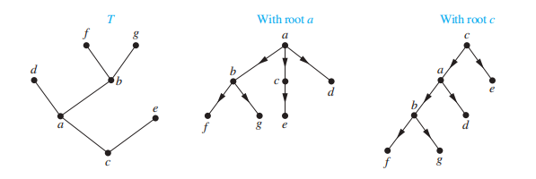
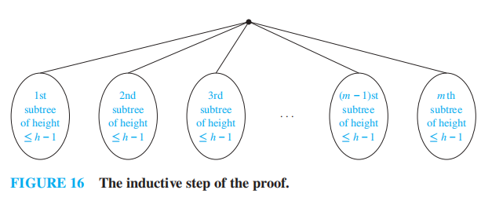

Chap 11 Trees⚓︎
约 6950 个字 预计阅读时间 35 分钟
核心知识
- 基本概念
- 应用：二分查找树、决策树、前缀树
- 树的遍历、表达式树
- 生成树
- DFS( 回溯算法 )、BFS
- 最小生成树：Prim 算法、Kruskal 算法
注：
- 树的知识点在 fds 已讲过，可以互为参照，之后考虑合并起来
- 在树中，我更喜欢将 "vertex" 翻译成“节点”，而非“顶点”，感觉前者读起来更通顺一点
Introduction to Trees⚓︎
定义：树 (trees)是没有简单环的连通无向图
注：因为没有简单环，因此树也就不包含重边和自环
没有简单环，但不连通的无向图被称为森林 (forests)，它的连通分量是一棵树
🌰：
定理 1：当且仅当无向图上任意两点间有唯一的一条路径时，该图是一棵树
证明难度不大（考虑充分性和必要性
） ，故略
Rooted Trees⚓︎
定义：
- 有根树 (rooted tree)是一棵树，它指定某一个节点作为整棵树的根，每条边被视为从根出发的“有方向”的边（实际上还是无向边）
- m 叉树 (m-ary tree)：每个内部节点的孩子的个数不超过 m 的有根树
- 满 m 叉树 (full m-ary tree)：每个内部节点有且有 m 个孩子的有根树 ( 之前介绍过满二叉树 )
- 二叉树 (binary tree)：m = 2
- 有序根树 (ordered rooted tree)：所有内部节点的孩子按顺序排列 ( 从左往右 ) 的有根树
注：
- Chap 5 中我们曾介绍过有根树的递归定义
- 选择不同的根，就会产生不同的有根树，边的“方向”也是不同的
🌰：

- 有根树的其他基本概念 ( 诸如什么是父节点、子节点……) 见 fds 对应部分
- 二叉树的基本概念：左孩子 (left child)、右孩子 (right child)、左子树 (left subtree)、右子树 (right subtree)
 例题：非同构的树
例题：非同构的树
答案：3 棵
分析：在非同构的无根树的基础上判断 ( 分类讨论 )，需要考虑“方向”（根据有根树的定义，不是真正的方向）
答案：9 棵（蓝笔圈起来代表有根树的根节点）
Trees as Models⚓︎
树模型的应用：
- 饱和烃 (saturated hydrocarbons)
注：树模型的最早应用
- 组织架构
- 计算机文件系统
注：fds 介绍过类似内容，且更加详细
- 树连通的并行处理器
这样的网络可以用一棵完全二叉树表示：
- 既非叶子亦非根的节点可以双向连通：与父节点连通的 1 条连接，以及与孩子节点连通的 2 条连接
- 根节点：与孩子节点连通的 2 条连接
- 叶子节点：与父节点连通的 1 条连接
🌰：
Properties of Trees⚓︎
定理 2：一棵具有 n 个节点的树有 n - 1 条边
证明可以采用归纳法——但我认为是小题大做，因为很容易理解：除了根外，每个节点的上头都有一条不同的边，因此 n 个节点有 n - 1 条边
对于无向图 G，下面 3 个条件中：
- G 是连通的
- G 没有简单环
- G 有 n - 1 条边
只要其中 2 个条件成立，就可以说明 G 是一棵树，且剩下的 1 条也一定成立
定理 3：有 i 个内部节点的满 m 叉树具有 n = mi + 1 个节点
定理 4：对于一棵满 m 叉树
- 若有 n 个节点，内部节点 \(i = \dfrac{n - 1}{m}\)，叶子 \(l = \dfrac{(m - 1)n + 1}{m}\)
- 若有 i 个内部节点，节点 \(n = mi + 1\)，叶子 \(l = (m - 1)i + 1\)
- 若有 l 个叶子节点，节点 \(n = \dfrac{ml - 1}{m - 1}\)，内部节点 \(i = \dfrac{l - 1}{m - 1}\)
注：只要记住定理 4 的三条中的一条即可，剩余两条可以通过这一条推出来
- 节点的层级 (level)：根节点到该节点间路径的长度
- 树的高度 (height)：节点的最大层级，即根节点到任意节点的路径中的最长者
注意：这里的高度 = fds 所说的深度，且根的高度 = 0，千万不要搞错 !!!
如果有根 m 叉树的高度为 h，且所有叶子的层级为 h 或 h - 1，则这棵树是平衡的 (balanced)
定理 5：高度为 h 的 m 叉树至多有 \(m^h\) 个叶子
注：证明还是用数学归纳法，具体内容略，这里放一张图，相信看了就会懂👌

引理 1：
- 如果 m 叉树的高度为 h，叶子数为 l，则 \(h \ge \lceil \log_m l \rceil\)
- 如果 m 叉树是满的，且是平衡的，则 \(h = \lceil \log_m l \rceil\)
Supplements(from Exercises)⚓︎
- 对于一张简单图，当且仅当它是连通的，且删除任意一条边就会使整张图不连通时，该图是一棵树
- 完全 m 叉树 (complete m-ary tree)：所有叶子的层级相同的满 m 叉树
- 高度为 h 的满 m 叉平衡树的叶子数多于 \(m^{h-1}\) 个
- 标记树 (labeled tree)：每个节点被赋予一个标记的一棵树。当 2 棵标记树之间存在一种同构 (isomorphism)，使得节点的标记得到保留，称这 2 棵树是同构的
-
无根树的节点的离心率 (eccentricity)：从该节点出发的最长简单路径的长度。如果没有任何节点的离心率小于节点 v，称 v 为中心 (center)
- 要从 1 棵无根树中得到 1 棵高度最小的有根树，我们应该选取中心作为有根树的根
- 一棵树要么有一个中心，要么有 2 个相邻的中心
-
有根斐波那契树 (rooted Fibonacci tree)\(T_n\) 的递归定义：
-
\(T_1, T_2\) 为只有单个节点的有根树
- 对 \(n = 3, 4, \dots\)，将 \(T_{n-1}\) 作为左子树，\(T_{n-2}\) 作为右子树，构建根树 \(T_n\)
- 具有 n 个节点二叉树叶子的平均深度为为 \(\Omega(\log n)\)
Applications of Trees⚓︎
Binary Search Trees⚓︎
具体见 fds，这里就稍微提一下
算法的伪代码：
Decision Trees⚓︎
决策树 (decision trees)：一种有根树，内部节点表示一个决策，子树表示某种决策的结果
🌰：
- 找假币
- 用决策树证明基于比较的排序的时间复杂度 ( fds 已讲过 )
定理 1：基于二分比较的排序算法需要至少 \(\lceil \log_2 n! \rceil\) 次比较
引理 1：基于二分比较的排序算法的比较次数为 \(\Omega(n \log n)\)
定理 2：基于二分比较的排序算法的平均比较次数为 \(\Omega(n \log n)\)
Prefix Codes⚓︎
🎯：用位串对一些字符进行编码，实现数据压缩 (data compression)
前缀码 (prefix code)：一种用位串编码字符的方式，保证一个位串只与其中一个字符序列相关联，而不会产生歧义。
我们可以用二叉树表示前缀码：
- 用带标记的叶子表示字符
- 树的边用 0 或 1 标记，0 表示前往左孩子，1 表示前往右孩子
利用树的性质：根节点到任意节点的路径是唯一的，我们可以为每个字符确定一个唯一对应的位串
🌰：
如果知道了前缀码的二叉树，那么我们可以将一个位串“解码“为原来的字符序列
🌰：根据上图的二叉树 ( 除了 1111，其他位串均以 0 为结尾 )，11111011100 \(\rightarrow\) sane
哈夫曼编码 (Huffman coding)：将字符串中字符出现的频率作为输入，输出一种前缀码，满足频率最高的字符采用尽可能短的位串的一种算法
流程：
- 初始状态下，我们有一片森林，其中每棵树只有一个表示不同字符的节点
-
每一步中，我们挑选权重 ( 频率 ) 最小的两棵树，组成新的树：
- 引入一个新的根
- 将权重较大的树作为左子树
- 将权重较小的树作为右子树
- 新的树的权重为 2 棵树的权重和
然后将新的树放回原来的森林中
-
直到只剩下一棵树时为止
注
- 哈夫曼树的权重 = \(\sum\) [ 每个节点出现的权重 ( 一般为频率 ) \(\times\) 表示该节点的位串长度 ]
- 平均位串长度 = 哈夫曼树的权重 / 节点数
算法伪代码：
🌰：
注：
- 哈夫曼编码是一种贪心算法
- 该算法具有许多变种，可参看 wiki
Game Trees⚓︎
注：这一小节在课上没有展开讲述
博弈树 (game tree)：用来描述一类游戏 ( 双方轮流行动，每个玩家可以了解对方的行动，且没有偶然因素出现 ) 的一种树
- 节点表示游戏进行到的某个位置
- 边表示两个位置之间的合法行动
- 通过同一个节点表示所有对称的位置的方法实现对博弈树的化简
- 根表示游戏的开始位置
- 偶层级的节点用方框表示，此时是第一位玩家的回合
- 奇层级的节点用圆圈表示，此时是第二位玩家的回合
- 这棵树可以是无穷大的，表示游戏进入了无限循环，但大多数游戏都采用一定的规则防止这种情况的发生
-
叶子表示游戏的最终位置，我们为每个叶子赋予某个值，表示游戏的最终结果
- '1' 表示第一位玩家获胜
- ‘-1’表示第二位玩家获胜
- ‘0’表示平局
Example
有几堆石子，两位玩家轮流行动，每次可以从 1 堆石子中拿走一个或多个石子，但不能拿走所有剩下的石子，最后拿完石子的玩家输掉游戏。它的博弈树如下：
它的博弈树相当大，限于篇幅，这里就展示博弈树的一部分
策略 (strategy)：采取一些规则，使玩家通过选定的行动赢得游戏
( 递归 ) 定义：决策树的节点的值
- 叶子的值是第一位玩家的比赛结果 ( 上面已介绍过 )
- 偶层级的中间节点的值为它所有孩子节点的最大值
- 奇层级的中间节点的值为它所有孩子节点的最小值
极小极大策略 (minmax strategy)：第一位玩家向值最大的孩子移动，第二位玩家向值最小的孩子移动的策略。我们可以通过计算根对应的值来判断哪位玩家赢得游戏，这个值被称为树的值
定理 3：如果玩家双方从某个节点开始，均采用极小极大策略，那么该节点的值为比赛的最终结果
证明见教材 \(P_{803-804}\)
注：极小极大策略对玩家双方来说都是最优的策略
🌰：
一些知名的游戏的博弈树的规模很大，因此我们需要采用更优的策略：
- \(\alpha-\beta\) 剪枝 (alpha-beta pruning)
- 评估函数 (evaluation function)
Supplements(from Exercises)⚓︎
- 锦标赛排序 (tournament sort)：采取 [[Chap 10 Graph#^a518cd| 单淘汰赛 ]] 的机制，先选出最大的节点，然后将该点设为无穷小，再选取第二大的节点，以此类推，直至所有节点都被选出，这样我们便实现了升序排序
- 时间复杂度：\(\Theta(n \log n)\)
-
对 N 个字符的 m 元哈夫曼编码类似前面提到的二元哈夫曼编码
- 起始步骤：从由单个节点构成树中，挑选 \(((N - 1) \ \mathbf{mod}\ (m - 1)) + 1\) 棵权值最小的树，形成一棵有根树
- 后续步骤：挑选 m 棵权重最小的树，形成 m 叉树
-
在取物游戏中
-
规定每人拿相同的石子 ( 数量 \(\ge\) 2)，如果双方均采取最优策略，则第二位玩家获胜
- 若开始于两堆不同数量的石子中，若双方均采取最优策略，则第一位玩家获胜
Tree Traversal⚓︎
Universal Address Systems⚓︎
通用地址系统 (universal address system)——一种有序根树的排序，其规则如下 ( 递归方法 )：
- 根节点标记为 0，它的孩子从左往右依次被标记为 1, 2, 3, ..., k
- 对于每个在层级 n 的节点 v，它的标记为 A，且有 \(k_v\) 个孩子，则这些孩子从左往右依次被标记为 A.1, A.2, ..., A.\(k_v\)
我们可以在通用地址系统中定义词典序：规定当满足下列条件之一时，\(x_1.x_2. \dots .x_n < y_1.y_2. \dots .y_n\) 成立
- \(x_1 = y_1, x_2 = y_2, \dots, x_{i-1} = y_{i-1}, x_i < y_i\)，其中 \(0 \le i \le n\)
- \(n < m, \forall i = 1, 2, \dots, n, x_i = y_i\)
🌰：
Traversal Algorithms⚓︎
- 前序遍历 (preorder traversal)：先遍历根节点 r，然后对它的子树 \(T_1, T_2, \dots, T_n\) 分别进行前序遍历
- 中序遍历 (inorder traversal)：先对子树 \(T_1\) 进行中序遍历，然后遍历根节点 r，最后依次对子树 \(T_2, T_3, \dots, T_n\) 进行中序遍历
- 后序遍历 (postorder traversal)：先对所有子树 \(T_1, T_2, \dots, T_n\) 进行后序遍历，后遍历根节点 r
注：可以看出，我们采用了递归定义
例题
对下图分别进行三种遍历
速记法
如图所示：
- 前序遍历：从根节点开始，按照蓝色路线走，遇到节点就输出
- 中序遍历：从根节点开始，按照蓝色路线走，当遇到叶子节点时就输出，当第 2 次遇到内部节点时再输出
- 后序遍历：从根节点开始，按照蓝色路线走，当最后一次 ( 即沿蓝色路线向上走时 ) 遇到节点时就输出
问：对于该图，它的前序、中序和后序遍历的结果分别是什么？
答案
- 前序遍历：a, b, d, h, e, i, j, c, f, g, k
- 中序遍历：h, d, b, i, e, j, a, f, c, k, g
- 后序遍历：h, d, i, j, e, b, f, k, g, c, a
算法的伪代码
注：前序和后序遍历可以唯一确定一棵有序根树，因此它们可以对有序满 m 叉树的结构进行编码
应用：
- 前序遍历：拷贝二叉搜索树
- 中序遍历：从二叉搜索树中得到节点值的升序排序
- 后序遍历：删除一棵树；得到拓扑排序
Infix, Prefix, and Postfix Notation⚓︎
- 中缀式 (infix form)：通过对表达式树的中序遍历得到的表达式，实际上就是原表达式
- 前缀式 (prefix form)：通过对表达式树的前序遍历得到的表达式，又被称为波兰表示法 (Polish notation)
- 后缀式 (postfix form)：通过对表达式树的前序遍历得到的表达式，又被称为逆波兰表示法 (reverse Polish notation)
注：中缀式表达式可能会产生歧义，需要添加括号；而前缀式和后缀式表达式没有歧义，无需添加括号
🌰：计算前缀式和后缀式
注：'\(\uparrow\)' 表示幂运算
- 前缀式：从右往左计算
- 后缀式：从左往右计算
根树除了用来表示算术表达式，还可以表示复合命题，原理类似，除了需要特别考虑单目运算符 '\(\neg\)'：它仅有一个操作数，因此在表达式树上它仅有一个孩子
🌰：
Supplements(from Exercises)⚓︎
-
前缀式的合式公式的递归定义：
- 如果 x 是个符号，则 x 是前缀式的合式公式
- 如果 X 和 Y 是合式公式，* 是一个操作符，则 *XY 是一个合式公式
-
前缀式的合式公式中，符号的数量总是比操作符的数量多一个
Spanning Trees⚓︎
简单图 G 的生成树 (spanning tree)：G 中包含所有顶点的子图
定理 1：当且仅当简单图连通时，该图具有生成树
IP 组播 (multicasting)
- 单播 (unicasting)：源计算机向所有接收计算机单独发送数据——效率低
- 组播 (multicasting)：源计算机仅发送一个数据副本，数据通过路由器一步步传播，直到发送至接收计算机。从下图可以看出，组播的数据传播图是一棵生成树
虽然我们可以通过对原图进行删边操作得到一棵生成树，但这样做效率太低了。相反，我们会采取添边的方式构建一棵生成树，下面介绍的 DFS 和 BFS 均采用这种方式
Depth-First Search⚓︎
深度优先搜索 (depth-first search, DFS)的思路：
- 先在图中任意选取一个顶点作为根节点
- 从根节点出发，连续添加顶点和边，其中新增的边一定与最后添加的顶点相关联，且新添的顶点尚不在路径中，尽可能地往下这样做
- 当访问完所有顶点时，我们可以得到一棵生成树
- 否则 ( 遇到“死胡同”)，返回到路径中倒数第二个顶点，若有可能，从该顶点出发，按照上面的步骤重新寻找新的路径 ( 要找未被访问过的顶点 )。如果找完所有可能，再返回上一个顶点，再寻找新的路径，直至所有顶点均被访问过
当我们将顶点 v 添加至树内，且后来又回溯到该顶点，这个过程被称为从顶点 v探索 (explore)
注：DFS 体现的思想：
- 递归
- 回溯 (backtracking)
🌰
在原图中标注生成树：
- 树边 (tree edges)：图中作为生成树的边 ( 即图中蓝色粗线 )
- 回边 (back edges)：连接顶点和它在生成树中的祖宗或后代节点的边 ( 即图中黑色细线 )
算法的伪代码：
时间复杂度：\(O(e)\) 或 \(O(n^2)\)，其中 e 和 n 分别是边和顶点的数量
证明：很容易想到图中的每条边至多被访问 2 次
应用：
- 寻找连通分量 ( 若图不连通 )
- 找割点 ( 若图连通 )
Breadth-First Search⚓︎
宽度优先搜索 (breadth-first search, BFS)的思路：
- 先在图中任意选取一个顶点作为根节点
- 将所有与根节点相邻的顶点添加至树内，对它们任意排序，这些顶点因而成为生成树中层级为 1 的节点，
- 对于层级为 1 的所有节点，按顺序依次访问所有与这些顶点关联的边上的另一个顶点，且保证不会产生简单环，对得到的顶点进行任意排序
- 这样，我们得到层级为 1 的节点的所有孩子，它们构成层级为 2 的节点
- 如此往复，直至所有顶点被添加至树内
我们使用 "加工 (process)" 一词描述添加新顶点和关联边的过程
🌰
算法的伪代码：
时间复杂度：\(O(e)\) 或 \(O(n^2)\)
理由同上
应用：
- 判断一张图是不是二分的
- 找到图中 2 个顶点间边数最少的路径
DFS vs BFS
要得到生成树 ,
- 在稠密图中采用 DFS
- 在稀疏图中采用 BFS
Backtracking Applications⚓︎
回溯的应用
看看就行，这种方法效率不高
在 \(n \times n\) 的棋盘上摆放 n 个皇后，使得任意两个皇后不会相互攻击，即任意两个皇后不在同一行、同一列以及同一条对角线上 (2 条对角线 )
下面给出 \(4 \times 4\) 棋盘上摆放皇后的情况
对于一个正整数集 \(\{x_1, x_2, \dots, x_n\}\)，要求找到一个子集，满足子集中元素之和 = 常数 M
🌰
Depth-First Search in Directed Graphs⚓︎
我们可以用 DFS 和 BFS 找到有向图的生成树，但是有时我们可能得到的是几棵生成树——生成森林 (spanning forest)。这时，当我们使用这两种算法时，发现整个算法流程结束后还有一些顶点不在生成树内，那么我们需要在这些顶点中挑一个作为另一棵生成树的根节点，在剩余顶点中得到生成树。
🌰
DFS 在有向图中的应用：
- 判断是否有环
- 得到拓扑排序
- 找到强连通分量
实际应用：网络爬虫 (web crawler)
Supplements(from Exercises)⚓︎
- 在连通简单图中，顶点 v 和 u 之间的最短路径的长度 = 以 v 为根的 BFS 生成树中 u 的层级数
- 令 G 为连通图，T 为 G 的 BFS 生成树，那么 G 中不在 T 的一条边必须连接在相同层级或层级相差 1 的两个顶点
- 令 G 为连通图，T 为 G 的 DFS 生成树，那么 G 中不在 T 的一条边必须是回边
- 令 G 为有向图，T 为 G 的 BFS 生成树，那么 G 中的每条边的 2 个端点要么在相同层级，要么相差 1 个层级
-
令 G 为有向图，T 为 G 的 DFS 生成树，那么不在生成树的边是下列 3 种边种的一种：
- 前边 (forward edge)：祖先 \(\rightarrow\) 后代
- 回边 (back edge)：后代 \(\rightarrow\) 祖先
- 叉边 (cross edge)：顶点 \(\rightarrow\) 在前一棵被访问的子树中的顶点
-
令 \(T_1, T_2\) 为一张图中的生成树，它们的距离 (distance)为它们非公共边的条数
- 假设 \(T_1, T_2, T_3\) 是 G 的生成树，则 \(\mathrm{dis}(T_1, T_3) \le \mathrm{dis}(T_1, T_2) + \mathrm{dis}(T_2, T_3)\)
-
假设 \(T_1, T_2\) 为简单图 G 的生成树，\(e_1\) 为在 \(T_1\) 但不在 \(T_2\) 的一条边，那么在 \(T_2\) 存在一条边 \(e_2\)，它不在 \(T_1\)，满足：
- 若移除 \(e_1\)，添上 \(e_2\)，\(T_1\) 仍为一棵生成树
- 若移除 \(e_2\)，添上 \(e_1\)，\(T_2\) 仍为一棵生成树
-
有向图的有根生成树 (rooted spanning tree)：包含该图的边的有根树，满足图中任意顶点是树里某一条边的端点
- 对于一棵连通有向图，若它的每个顶点的入度 = 出度，则它有一棵有根树
- 令 G 为有向图，T 为 G 的 DFS 生成树，那么，当且仅当 G 包含一条与 T 有关的回边时，该图有一个环
Minimum Spanning Trees⚓︎
Algorithms for Minimum Spanning Trees⚓︎
最小生成树 (minimum spanning tree)：连通带权图中的一棵生成树，满足所有边的权重和是最小的
寻找最小生成树的算法
注：
- 这些算法均为贪心算法
- m, n 分别表示边数和顶点数
- 同一张图的最小生成树可能不止一种
思想：在图中剩余的边里，将与树中节点有关联的权重最小的边加到树中
时间复杂度：\(O(m \log n)\)
思想：挑选当前图中剩余的边里权重最小的边，且不会产生环
时间复杂度：\(O(m \log m)\)
在稀疏图中，Kruskal 算法效率更高；在稠密图中，两种算法效率差不多
Example
对于下面给出的带权图，找出它的最小生成树
Supplements(from Exercises)⚓︎
- 带权图的最小生成森林 (minimum spanning forest)：最小权重的生成森林
- 连通带权图的最大生成树 (maximum spanning tree)
- 连通带权图中权重最小的边一定出现在所有的最小生成树内
- 如果连通带权图的所有边的权重都不相同，则它的最小生成树是唯一的
- Sollin's algorithm
Supplements⚓︎
补充知识 ( 可忽略，考试应该不会考这些 )
- 至少有 1 条边的树，一定存在至少 2 个度为 1 的节点
- 一棵有 n 个节点，n - 1 个度为 1 的节点的数一定与 \(K_{1, n - 1}\) 同构
- 假设 n 个正整数 \(d_1, d_2, \dots, d_n\)，它们的和为 2n-2，则存在一棵有 n 个节点的树，这些节点的度为 \(d_1, d_2, \dots, d_n\)
- 任何树都是平面图
- 任何树都是二分图
- 任何树可用 2 种颜色上色
-
度为 k 的 B 树 (B-tree of degree k)：一棵有根树，满足：
- 所有叶子在同一层级
- 它的根节点至少有 2 个孩子，至多有 k 个孩子 ( 除非它是叶子 )
- 除了根节点的内部节点至少有 \(\lceil \dfrac{k}{2} \rceil\) 个孩子，至多有 k 个孩子
在计算机文件中使用 B 树可以提升访问效率
-
二项式树 (binomial tree)\(B_i\)(i = 0, 1, 2, ...) 是一棵有序根树，它的递归定义如下：
- 基本步骤：\(B_0\) 为单节点树
-
递归步骤：令 k 为非负整数，要构建 \(B_{k+1}\)：得到 2 棵 \(B_k\)，第 1 棵 \(B_k\) 的根节点作为第 2 棵 \(B_k\) 根节点最左边的孩子，得到的新树即为 \(B_{k+1}\)
-
\(B_k\) 中度最大的节点为根节点
-
\(S_k\) 树：一种有根树，满足下面的递归定义：
- \(S_0\) 树：只有一个节点
-
\(S_k\) 树：由 2 棵 \(S_{k-1}\) 树构成，其中一棵 \(S_{k-1}\) 树的根作为 \(S_k\) 树的根，另一棵 \(S_{k-1}\) 树的根作为第一棵 \(S_{k-1}\) 树的孩子
-
\(S_k\) 树有 \(2^k\) 个节点，且在层级 \(k\) 上仅有一个节点，这个节点被称为把手 (handle)
-
有根树的层序 (level order)：从根节点开始，然后从左往右遍历第 1 层的节点，接着从左往右遍历第 2 层节点，以此类推。
-
图的割集 (cut set)为一组边的集合，当移除这些边后，将会产生一个比原图具有更多连通分量的子图，但是这个集合的真子集不具备这个性质
- 割集中至少有一条边作为该图所有生成树的共有边
-
仙人掌图 (cactus)：一张连通图，满足图上没有边出现在多个 (> 1) 简单环上，这些简单环经过除起点外的顶点的次数不超过 1 次，且不在终点外的任何地方经过起点 ( 若 2 个环包含相同的边，则这些边被认为是不同的 )
-
简单图 G 的度限制生成树 (degree-constrained spanning tree)是一棵生成树，满足：树中节点的度不超过指定范围。这种树常用于交通系统的建模中
- 对于一棵度限制生成树，若树中每个顶点的度不超过 2，则它构成了简单哈密顿路
-
对于一棵 n 节点的树，节点用整数 1, 2, ..., n 标记，若任意两个相邻节点的标记之差的绝对值互不相同，则认为这棵树是优雅的 (graceful)
-
毛虫 (caterpillar) 树是一棵树，它有一条简单路，使得所有不在该路径上的节点与在这条路径上的节点相邻
-
假设 e 是带权图与顶点 v 关联的一条边，它的权重不超过与 v 关联的其他所有边，那么存在一棵包含此边的生成树
- 若带权图中所有边的权重都不同，则与顶点 v 关联的权重最小的边一定出现在任何最小生成树内
-
令 G = (V, E) 为有向图，r 为 G 的顶点，以 r 为根的 G 的树状 (arborescence) 图是 G 的一个子图 T = (V, F)，使得 T 的潜在无向图是 G 的潜在无向图的一棵生成树，且 \(\forall v \in V\)，在 T 中存在一条从 r 到 v 的路径 ( 考虑方向 )
- G 有树状图 T 的充要条件是：T 包含 r，没有简单环，且 \(\forall v \in V - {r}, \mathrm{deg}^-(v) = 1 \text{ in T}\)
- 另一个充要条件：\(\forall v \in V\)，存在从 r 到 v 的有向路径
评论区